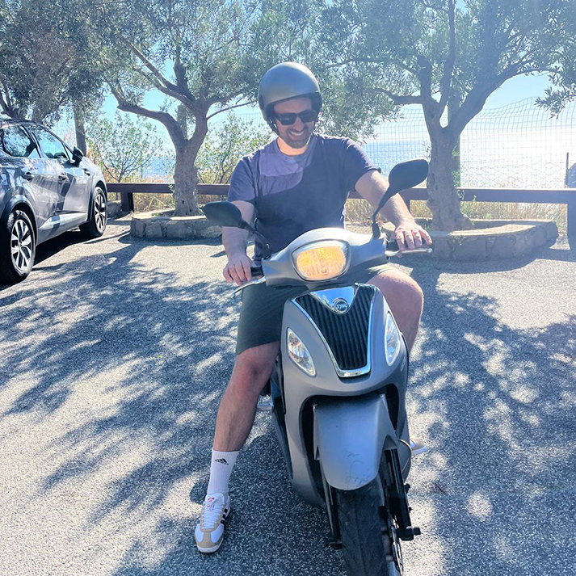

Product Design Lead with experience across fintech, sustainability, publishing, and e-commerce, having worked with teams at Intick, Sedex, The Economist, and Mr Porter. I’ve built a broad skill set in interface design, information architecture, design systems, research, and workshopping, leading projects end-to-end, collaborating closely with stakeholders, and mentoring other designers along the way.
In my spare time I enjoy film, art, travel, and exploring different cultures. Growing up in a large family, I’ve learned to thrive in social, fast-moving environments, and I bring the same curiosity, energy, and ambition to everything I do, whether experimenting with a new tool, a side project, or shaping a product from concept to delivery.
"Patrick was a great mentor and trainer to product designers, implementing processes and practices to significantly elevate the design function. He established a usable design system and ensured its adoption. He's a great guy, a pleasure to work with and has a strong can-do attitude."
"Pat played a pivotal role in shaping the foundations of our design system — and is genuinely a pleasure to work with. He brought clarity and structure to what could have easily become a fragmented process. He didn't just create components — he established principles, patterns, and a scalable approach that continues to benefit the entire team."
"Patrick worked on a really complex initiative at The Economist and did a brilliant job designing intricate user journeys and e-commerce flows. He jelled really well with the product managers and engineers to ship some really impactful and transformational work."
"I really enjoyed working with Patrick. He had a very collaborative relationship with our devs and the design to build journey was super smooth, he was patient when requirements changed and turned things around really quickly."
"Patrick has been instrumental getting the Sedex Design to where it is today, both in terms of shepherding the design system into production, and building relationships outside our function, notably with the Front End Developers."
"Patrick is a calm, diligent designer and did some great work at The Economist on our new customer flows and journeys. He's a great listener and takes stakeholder feedback well. I would highly recommend Patrick and his work."